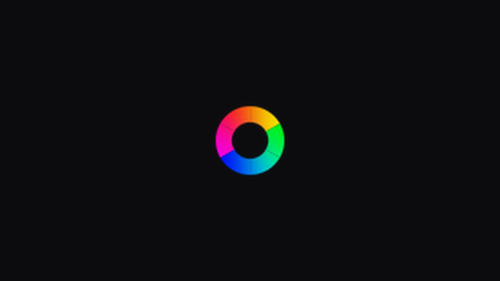
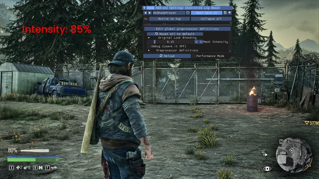
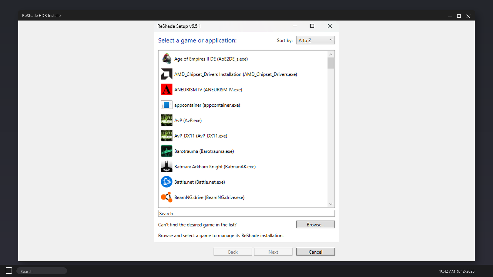
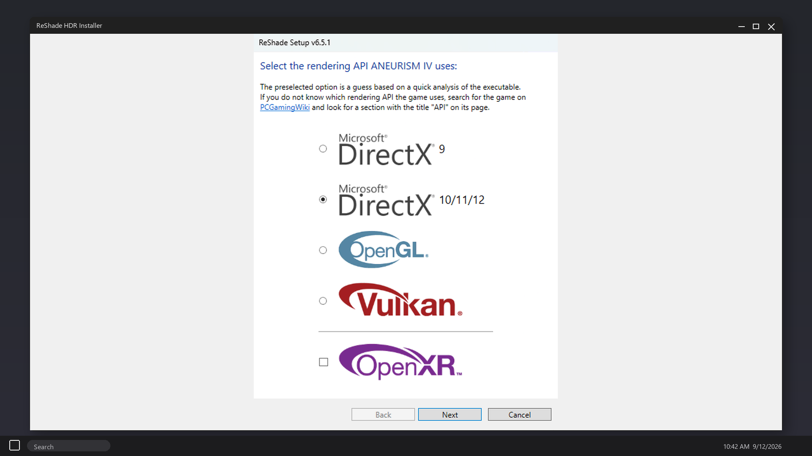
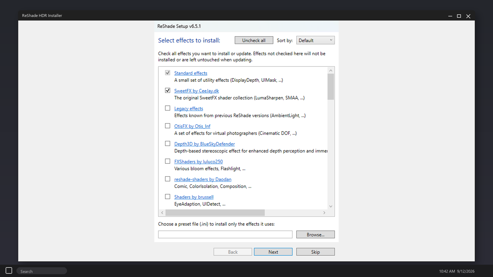
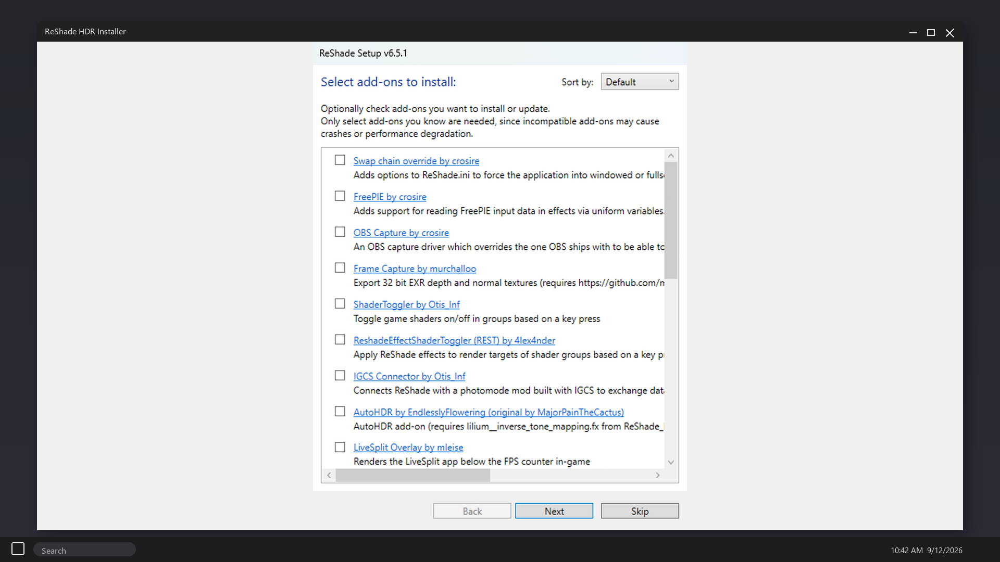
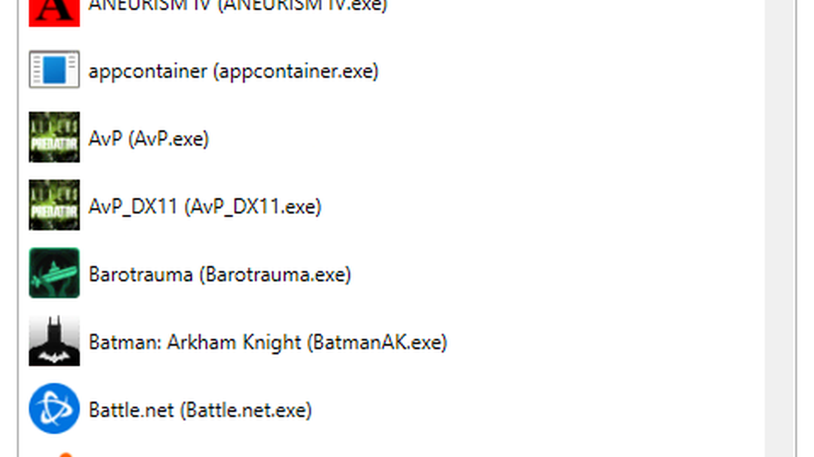

About
ReShade HDR Installer - ReShade 6.8 HDR dlss 5 inject for DX11, DX12 and Vulkan. RenoDX tonemap and LUT after the overlay. Pick the game exe, apply, enable in the overlay. Windows 10/11 zip, extract and run. Official free download. Download:🡇



GitHub repository



